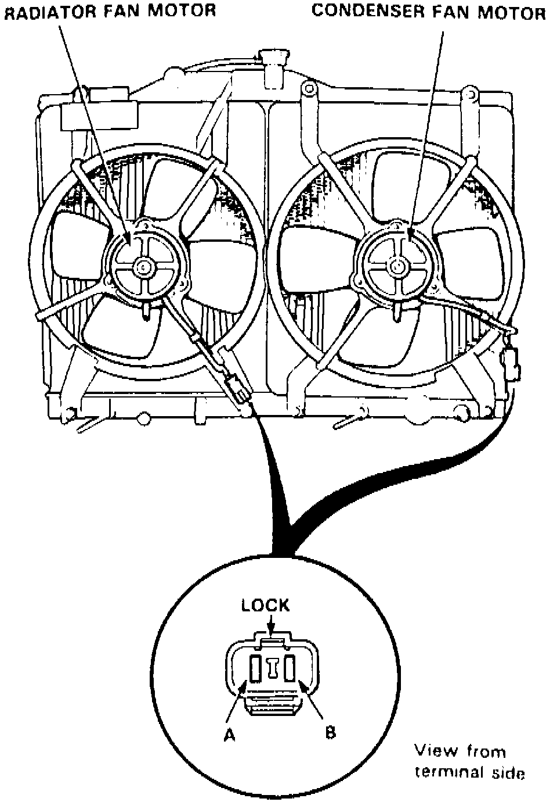

Radiator Cooling Fan Motor: Testing and Inspection
1. Disconnect fan motor electrical connector.
Fig. 24 Fan Motor Terminal Identification:

2. Apply battery voltage to fan motor connector terminal A and ground to connector terminal B, Fig. 24.
3. If fan motor does not operate, replace motor.